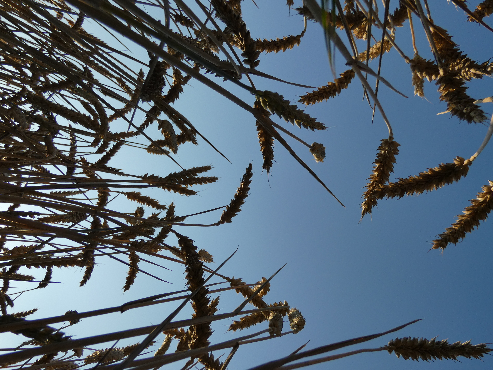

I appreciate you, my reader. I thank everyone who ever helped me. I'm especially grateful for my mother. This blog
is about beliefs, insights, and adventures on my rather unqiue journey.
I tell my stories - Yet, this blog is
truly not about me.
Tip: Read on the computer to enhance comprahension and focus.
Bonus Tip.
Bookmark this page ;-)
Jump to the bottom (about me, quotes, links, etc.)

The texts from November 2023 to June 2024 (151,400 words) are offline. I want higher quality, more focus, and a spiritual boundary. I also want my texts to be friendlier. I believe my readers deserve uncompromising quality.
Old approximate word count as of approximate wordcount before deletations and modifications, 14.6.2024: 289,700
My life is a movie. I believe it’s one worth watching, an inspiring one.
My name is Kiryl P. and currently, I'm 17 years old. I’m from Belarus. At the age of 5, we moved to Germany. My childhood gifted me with endless motivation and a truly indomitable spirit. That’s a fancy way to say it was painful, difficult, and uncertain. At 13 years old, things had finally taken a turn. I laid out a plan for my future.
The plan? I would grip my life, and excel at everything in the pursuit of success. For me, success and business were closely linked. I started to learn how to program at 13 years old to create a software business. At 16 years old I had to realize my mental math apps wouldn’t work out. Hence, I started to focus on content creation – for example, this blog, all as a part of my 2020 vision.
In the meantime, every other area of my life saw massive changes. Heartbreak, sacrifices, difficult decisions – I’ve had it all at the times I would least expect; while knowing that I have barely started to live. I’ve had times where I wanted to quit and refused to. I've had times where I knew something had to be done - fast. I've had times where I thought, 'Moment, just linger, you are so beautiful'. My life is a movie.
Do you want to help inspire success, responsibility and discipline among the youth?
Uncompromising excellence
is a true testament to the indomitability
of my spirit.
June 9th 2024,
Kiryl P.
If you consistently do the brave thing, show up, pay attention, put in the work, and live with a pure heart, failure becomes impossible. With unwavering discipline, unyielding perseverance, and unbridled passion, success is not just a possibility, but a certainty in the long run. You will live a monumental life if you always give your best and lean beyond your edge.
Legal disclaimer
The views and opinions expressed in this blog are those of the author and do not necessarily reflect the official policy or position of any organization, institution, or individual with which the author is affiliated. The content presented is based on the author's perspective and interpretation of the subject matter. Neither the publisher nor any associated parties shall be held responsible for any consequences arising from the opinions or interpretations expressed within this blog.
This blog is not intended to serve as a substitute for professional medical advice. It is not meant to be used to diagnose or treat any medical or psychological condition. Readers are advised to consult their professional advisors, who are responsible for determining the state of, and the best treatment for, the reader.
Disclaimer in the context of my texts
Hot blonde girl may or may not refer to blondes.
With love, Kiryl P., 2024